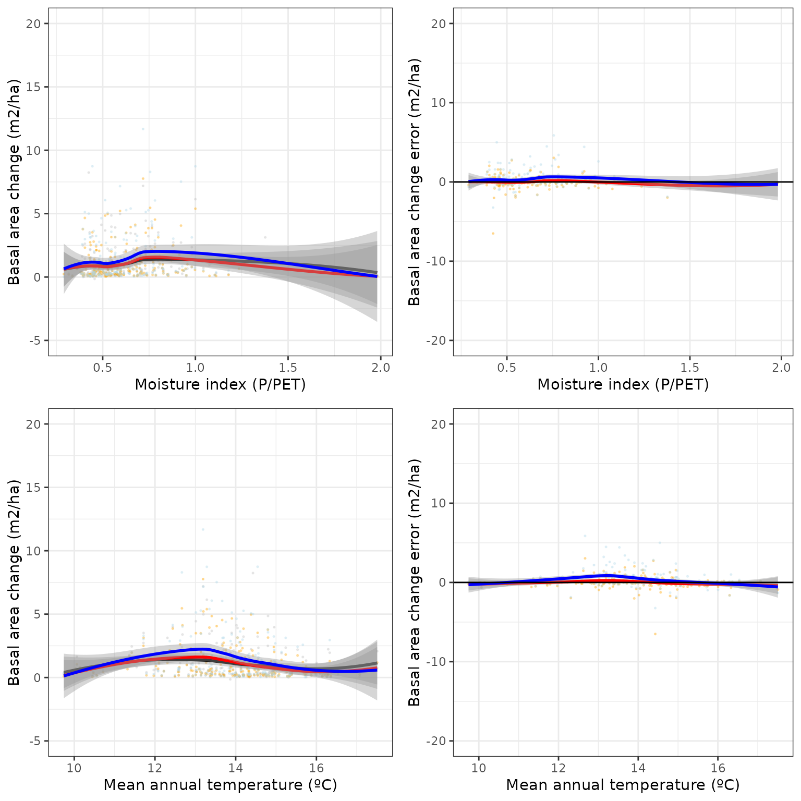
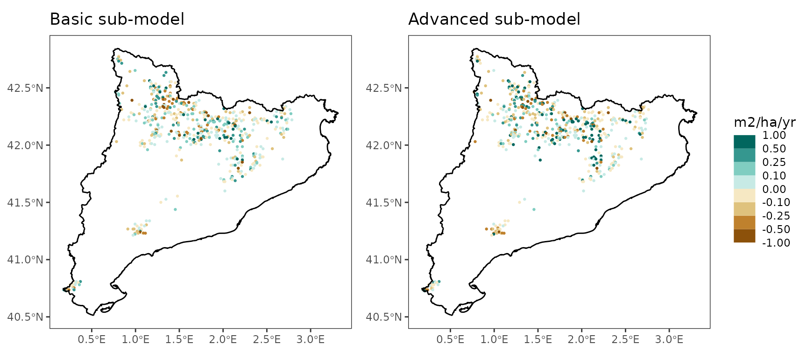

Evaluation of regional-level forest dynamics with forest inventory data
Miquel De Cáceres
2022-09-08
Source:vignettes/evaluation/RegionalLevelEvaluation.Rmd
RegionalLevelEvaluation.RmdIntroduction
Goal
The aim of this article is to provide an assessment of the
performance of fordyn for the prediction of forest dynamics
in Catalonia (NE of Spain). To this aim, we simulate forest dynamics
between two surveys of the Spanish National Forest Inventory and compare
the model predictions of forest growth against inventory data for a
large set of permanent plots. The evaluation focuses first on the growth
(in diameter and height) of surviving trees, then turning the attention
to the basal area of dead trees and overall changes in basal area.
This evaluation was conducted using medfate package version 2.8.0 for the basic model and 2.8.0 for the advanced model.
Simulation procedure
We selected 3150 repeated plots (A1 between IFN3 and IFN4) without signs of management (cut trees) and whose basal area did not decrease between inventory surveys.
Soil physical properties were drawn from SoilGrids (Hengl 2016), complemented by rock fragment content estimates derived from surface stoniness measurements in forest plots. Simulations were conducted between 2000/2001 (IFN3) and 2014/2016 (IFN4) depending on the sampling years of the target plot, with daily weather data obtained via interpolation on plot’s coordinates using package meteoland.
Default species-specific parameters were modified using the results of the meta-modelling exercise and the growth calibration exercise. These two exercises do not provide values for all the main species included here, so it is expected that evaluation results are worse for those species not included in those exercises.
Simulations were done for both the basic and advanced transpiration/photosynthesis sub-models. On a server with 20 parallel threads, computational times are around 5 hours (i.e. 2 min/plot) for the basic sub-model, versus around 6 days (i.e. 1 hr/plot) for the advanced submodel. The average number of tree cohorts per plot is 17.
In the following sections, we provide the bias, mean absolute error (both in absolute and relative terms) and R-squared of growth and mortality predictions at the tree-level and stand-level obtained by simulations with both sub-models. Scatter plots are provided to represent the relationship between predicted and observed values, as well as the factors that may influence the direction and magnitude of prediction error (i.e. initial values, environmental conditions, …).
Detailed results of growth evaluation by species are provided in the last section.
Growth of surviving trees
Comparison of growth of trees (DBH >= 7.5) that survived in both observed and simulated data.
Annual diameter increment (cm/yr)
Overall predictive capacity:| Submodel | n | Obs | Pred | Bias | Biasrel | RMSQ | RMSQrel | R2 |
|---|---|---|---|---|---|---|---|---|
| Basic | 51081 | 0.2131232 | 0.2044616 | -0.0086616 | -4.064143 | 0.1809223 | 84.89096 | 0.0961813 |
| Advanced | 35336 | 0.2136547 | 0.2258266 | 0.0121719 | 5.696997 | 0.1960910 | 91.77940 | 0.0563677 |
Predictive capacity plots:

Relationship between diameter increase and climatic variables (MAT, P/PET and available PAR):

Predictive capacity by species (for species with > 200 tree records):
| Name | Submodel | n | Obs | Pred | Bias | Biasrel | RMSQ | RMSQrel | R2 |
|---|---|---|---|---|---|---|---|---|---|
| Abies alba | Basic | 1165 | 0.3464767 | 0.1639516 | -0.1825251 | -52.6803262 | 0.3324431 | 95.94961 | 0.1672748 |
| Abies alba | Advanced | 1165 | 0.3333769 | 0.1992011 | -0.1341758 | -40.2474736 | 0.3094627 | 92.82668 | 0.1370062 |
| Arbutus unedo | Basic | 383 | 0.1076242 | 0.1092447 | 0.0016205 | 1.5057037 | 0.1330688 | 123.64205 | 0.0490595 |
| Arbutus unedo | Advanced | 210 | 0.1020042 | 0.1389524 | 0.0369482 | 36.2222426 | 0.1264881 | 124.00284 | 0.0183463 |
| Betula spp. | Basic | 481 | 0.1470986 | 0.0925652 | -0.0545335 | -37.0727294 | 0.1623625 | 110.37659 | 0.0323118 |
| Betula spp. | Advanced | 336 | 0.1452031 | 0.0896408 | -0.0555623 | -38.2652535 | 0.1648133 | 113.50538 | 0.0005160 |
| Castanea sativa | Basic | 262 | 0.2453758 | 0.2146355 | -0.0307403 | -12.5278326 | 0.2753755 | 112.22602 | 0.0049482 |
| Castanea sativa | Advanced | 254 | 0.2496052 | 0.2874383 | 0.0378331 | 15.1571790 | 0.2704912 | 108.36761 | 0.0045474 |
| Fagus sylvatica | Basic | 1678 | 0.2606039 | 0.2101464 | -0.0504575 | -19.3617549 | 0.2246270 | 86.19483 | 0.0488515 |
| Fagus sylvatica | Advanced | 1259 | 0.2731892 | 0.2447112 | -0.0284780 | -10.4242625 | 0.2440877 | 89.34751 | 0.0079279 |
| Fraxinus spp. | Basic | 284 | 0.2793960 | 0.2605439 | -0.0188521 | -6.7474460 | 0.2772546 | 99.23357 | 0.0196246 |
| Pinus halepensis | Basic | 6679 | 0.2842242 | 0.2713838 | -0.0128404 | -4.5176921 | 0.1916954 | 67.44514 | 0.0490526 |
| Pinus halepensis | Advanced | 4757 | 0.2740199 | 0.2397995 | -0.0342203 | -12.4882590 | 0.1973647 | 72.02569 | 0.0666133 |
| Pinus nigra | Basic | 5327 | 0.2060445 | 0.2291403 | 0.0230958 | 11.2091322 | 0.1549298 | 75.19236 | 0.0176051 |
| Pinus nigra | Advanced | 3542 | 0.2032557 | 0.2435991 | 0.0403434 | 19.8485940 | 0.1718602 | 84.55373 | 0.0333513 |
| Pinus pinaster | Basic | 609 | 0.3758681 | 0.4259077 | 0.0500396 | 13.3130629 | 0.2761344 | 73.46576 | 0.0141127 |
| Pinus pinaster | Advanced | 396 | 0.3977652 | 0.5153541 | 0.1175889 | 29.5623847 | 0.3498746 | 87.96009 | 0.0214712 |
| Pinus pinea | Basic | 1260 | 0.2956115 | 0.3231641 | 0.0275526 | 9.3205581 | 0.2013129 | 68.10049 | 0.0060145 |
| Pinus pinea | Advanced | 625 | 0.3131553 | 0.3784850 | 0.0653296 | 20.8617364 | 0.2214246 | 70.70758 | 0.0429538 |
| Pinus sylvestris | Basic | 10776 | 0.2304888 | 0.2291576 | -0.0013312 | -0.5775441 | 0.1659479 | 71.99826 | 0.0059147 |
| Pinus sylvestris | Advanced | 7593 | 0.2249969 | 0.2560945 | 0.0310976 | 13.8213653 | 0.1834560 | 81.53714 | 0.0018362 |
| Pinus uncinata | Basic | 4310 | 0.1917909 | 0.1228605 | -0.0689304 | -35.9403859 | 0.1712831 | 89.30720 | 0.0007600 |
| Pinus uncinata | Advanced | 3440 | 0.1916549 | 0.1329842 | -0.0586707 | -30.6126584 | 0.1682986 | 87.81335 | 0.0002179 |
| Populus spp. | Basic | 252 | 0.4741215 | 0.3681251 | -0.1059964 | -22.3563787 | 0.4677879 | 98.66415 | 0.0277986 |
| Quercus faginea | Basic | 859 | 0.1614694 | 0.1635159 | 0.0020465 | 1.2674512 | 0.1162573 | 71.99961 | 0.0727791 |
| Quercus faginea | Advanced | 699 | 0.1668634 | 0.2079811 | 0.0411177 | 24.6415403 | 0.1238327 | 74.21204 | 0.0426823 |
| Quercus ilex | Basic | 8734 | 0.1347316 | 0.1461899 | 0.0114583 | 8.5045402 | 0.1361650 | 101.06389 | 0.0801733 |
| Quercus ilex | Advanced | 5481 | 0.1395958 | 0.2027671 | 0.0631713 | 45.2530053 | 0.1650161 | 118.20993 | 0.0771687 |
| Quercus petraea | Basic | 1355 | 0.1713612 | 0.1942779 | 0.0229167 | 13.3732992 | 0.1563019 | 91.21193 | 0.0178240 |
| Quercus petraea | Advanced | 954 | 0.1680243 | 0.1959171 | 0.0278929 | 16.6004947 | 0.1680553 | 100.01849 | 0.0098003 |
| Quercus pubescens | Basic | 2879 | 0.1702009 | 0.1703402 | 0.0001392 | 0.0818020 | 0.1371836 | 80.60096 | 0.0673477 |
| Quercus pubescens | Advanced | 1949 | 0.1685114 | 0.2260927 | 0.0575813 | 34.1705737 | 0.1471455 | 87.32078 | 0.0466206 |
| Quercus suber | Basic | 2261 | 0.1660560 | 0.1800105 | 0.0139544 | 8.4034591 | 0.1767974 | 106.46855 | 0.0280906 |
| Quercus suber | Advanced | 1434 | 0.1670772 | 0.2100759 | 0.0429987 | 25.7358447 | 0.1758293 | 105.23838 | 0.0003146 |
Annual height increment (cm/yr)
Overall predictive capacity:| Submodel | Name | n | Obs | Pred | Bias | Biasrel | RMSQ | RMSQrel | R2 |
|---|---|---|---|---|---|---|---|---|---|
| Basic | All | 51081 | 9.670571 | 9.288146 | -0.3824255 | -3.954529 | 13.71894 | 141.8627 | 0.0510222 |
| Advanced | All | 35336 | 9.847223 | 10.193929 | 0.3467057 | 3.520847 | 14.18051 | 144.0052 | 0.0461926 |
Predictive capacity by species (for species with > 200 tree records):
| Name | Submodel | n | Obs | Pred | Bias | Biasrel | RMSQ | RMSQrel | R2 |
|---|---|---|---|---|---|---|---|---|---|
| Abies alba | Basic | 1165 | 18.112899 | 6.626918 | -11.4859811 | -63.413267 | 24.170321 | 133.44259 | 0.1420747 |
| Abies alba | Advanced | 1165 | 17.021072 | 8.068294 | -8.9527786 | -52.598205 | 23.026237 | 135.28076 | 0.1478430 |
| Arbutus unedo | Basic | 383 | 1.439077 | 3.304050 | 1.8649727 | 129.595027 | 8.785383 | 610.48719 | 0.0189695 |
| Arbutus unedo | Advanced | 210 | 1.218723 | 4.276233 | 3.0575104 | 250.878285 | 9.067156 | 743.98847 | 0.0275592 |
| Betula spp. | Basic | 481 | 9.049462 | 5.602122 | -3.4473399 | -38.094419 | 16.931333 | 187.09768 | 0.0158299 |
| Betula spp. | Advanced | 336 | 10.346481 | 5.594641 | -4.7518401 | -45.927115 | 17.008094 | 164.38530 | 0.0021835 |
| Castanea sativa | Basic | 262 | 8.912046 | 11.156721 | 2.2446751 | 25.186978 | 18.361814 | 206.03365 | 0.0127240 |
| Castanea sativa | Advanced | 254 | 9.725131 | 15.570653 | 5.8455220 | 60.107387 | 18.717879 | 192.46917 | 0.0358596 |
| Fagus sylvatica | Basic | 1678 | 14.801433 | 9.364261 | -5.4371717 | -36.734090 | 20.541849 | 138.78284 | 0.0002512 |
| Fagus sylvatica | Advanced | 1259 | 15.947265 | 10.494693 | -5.4525720 | -34.191267 | 20.596761 | 129.15544 | 0.0000001 |
| Fraxinus spp. | Basic | 284 | 14.825601 | 12.719788 | -2.1058133 | -14.203898 | 23.506565 | 158.55387 | 0.0256200 |
| Pinus halepensis | Basic | 6679 | 11.649445 | 11.503333 | -0.1461114 | -1.254235 | 12.768115 | 109.60278 | 0.0007335 |
| Pinus halepensis | Advanced | 4757 | 11.301714 | 10.040297 | -1.2614173 | -11.161292 | 11.931528 | 105.57273 | 0.0115824 |
| Pinus nigra | Basic | 5327 | 11.737117 | 13.132907 | 1.3957897 | 11.892100 | 11.783071 | 100.39153 | 0.0051152 |
| Pinus nigra | Advanced | 3542 | 11.786105 | 13.986334 | 2.2002299 | 18.667999 | 11.886181 | 100.84910 | 0.0451230 |
| Pinus pinaster | Basic | 609 | 18.541778 | 21.471857 | 2.9300787 | 15.802577 | 15.071054 | 81.28160 | 0.0099385 |
| Pinus pinaster | Advanced | 396 | 19.707389 | 25.351244 | 5.6438551 | 28.638269 | 17.738441 | 90.00909 | 0.0206049 |
| Pinus pinea | Basic | 1260 | 13.256547 | 12.635505 | -0.6210417 | -4.684792 | 11.536492 | 87.02486 | 0.0004231 |
| Pinus pinea | Advanced | 625 | 13.457382 | 14.718183 | 1.2608013 | 9.368846 | 11.966358 | 88.92041 | 0.0033395 |
| Pinus sylvestris | Basic | 10776 | 11.325648 | 12.080632 | 0.7549847 | 6.666150 | 12.590126 | 111.16473 | 0.0263920 |
| Pinus sylvestris | Advanced | 7593 | 11.207971 | 13.454559 | 2.2465888 | 20.044563 | 12.887339 | 114.98370 | 0.0298163 |
| Pinus uncinata | Basic | 4310 | 11.370621 | 6.126478 | -5.2441432 | -46.120111 | 12.422217 | 109.24835 | 0.0485991 |
| Pinus uncinata | Advanced | 3440 | 11.066833 | 6.615953 | -4.4508802 | -40.218193 | 11.950564 | 107.98540 | 0.0667925 |
| Populus spp. | Basic | 252 | 17.040504 | 20.316064 | 3.2755603 | 19.222204 | 31.085157 | 182.41924 | 0.0063295 |
| Quercus faginea | Basic | 859 | 4.488096 | 5.513520 | 1.0254233 | 22.847623 | 9.543106 | 212.63148 | 0.0205847 |
| Quercus faginea | Advanced | 699 | 4.812748 | 7.391747 | 2.5789986 | 53.586820 | 10.057308 | 208.97225 | 0.0412726 |
| Quercus ilex | Basic | 8734 | 4.796393 | 4.477139 | -0.3192535 | -6.656117 | 12.473309 | 260.05604 | 0.0050888 |
| Quercus ilex | Advanced | 5481 | 5.199640 | 6.437940 | 1.2382994 | 23.815099 | 14.120309 | 271.56321 | 0.0028469 |
| Quercus petraea | Basic | 1355 | 5.101553 | 10.302939 | 5.2013869 | 101.956941 | 15.417096 | 302.20400 | 0.0068173 |
| Quercus petraea | Advanced | 954 | 4.993349 | 10.413479 | 5.4201299 | 108.546988 | 15.148855 | 303.38067 | 0.0071163 |
| Quercus pubescens | Basic | 2879 | 4.897082 | 6.267068 | 1.3699856 | 27.975549 | 12.956491 | 264.57574 | 0.0307121 |
| Quercus pubescens | Advanced | 1949 | 4.443740 | 8.271256 | 3.8275156 | 86.132743 | 13.422242 | 302.04830 | 0.0461707 |
| Quercus suber | Basic | 2261 | 2.955049 | 5.751927 | 2.7968786 | 94.647459 | 9.714266 | 328.73454 | 0.0121742 |
| Quercus suber | Advanced | 1434 | 2.950102 | 6.684019 | 3.7339171 | 126.569092 | 10.205505 | 345.93738 | 0.0035059 |
Stand-level basal area increment (m2/ha)
This comparison does not take into account changes in density. In other words, densities from IFN3 are used to calculate stand-level basal area of surviving trees. It is meant to evaluate the effect of diameter increment of surviving trees in terms of stand basal area increments.
Predictive capacity table:| Submodel | Name | n | Obs | Pred | Bias | Biasrel | RMSQ | RMSQrel | R2 |
|---|---|---|---|---|---|---|---|---|---|
| Basic | All | 3150 | 4.600893 | 4.311137 | -0.2897561 | -6.297823 | 3.326956 | 72.31109 | 0.3564453 |
| Advanced | All | 2161 | 4.627725 | 4.917861 | 0.2901357 | 6.269510 | 4.003564 | 86.51256 | 0.3136633 |
Predictive capacity plots:

Relationship between basal area increase and climatic variables (MAT and P/PET):

Spatial error distribution:

| Name | Submodel | n | Obs | Pred | Bias | Biasrel | RMSQ | RMSQrel | R2 |
|---|---|---|---|---|---|---|---|---|---|
| Arbutus unedo | Basic | 133 | 0.7211163 | 0.7114275 | -0.0096887 | -1.3435720 | 0.9628847 | 133.52696 | 0.1418623 |
| Fagus sylvatica | Basic | 146 | 3.4277084 | 2.8214413 | -0.6062671 | -17.6872421 | 1.8504322 | 53.98453 | 0.6631230 |
| Fagus sylvatica | Advanced | 109 | 3.5800808 | 3.3732959 | -0.2067849 | -5.7759839 | 2.2799692 | 63.68485 | 0.6525002 |
| Pinus halepensis | Basic | 761 | 3.3697841 | 3.2024025 | -0.1673816 | -4.9671323 | 2.0606716 | 61.15144 | 0.5611858 |
| Pinus halepensis | Advanced | 544 | 3.2459346 | 2.7950409 | -0.4508938 | -13.8910305 | 2.3281305 | 71.72450 | 0.4948890 |
| Pinus nigra | Basic | 529 | 2.6320201 | 2.9178657 | 0.2858456 | 10.8603133 | 1.7656761 | 67.08445 | 0.6367287 |
| Pinus nigra | Advanced | 353 | 2.6132409 | 3.1633801 | 0.5501393 | 21.0519925 | 2.4400868 | 93.37397 | 0.6260661 |
| Pinus pinea | Basic | 239 | 1.7333523 | 1.8925048 | 0.1591525 | 9.1817769 | 1.3819976 | 79.72976 | 0.5766224 |
| Pinus pinea | Advanced | 130 | 1.6544390 | 2.0462300 | 0.3917910 | 23.6811965 | 1.5465911 | 93.48130 | 0.5481882 |
| Pinus sylvestris | Basic | 818 | 3.6966461 | 3.5770239 | -0.1196222 | -3.2359653 | 2.4167547 | 65.37695 | 0.5489867 |
| Pinus sylvestris | Advanced | 563 | 3.6739526 | 4.1644911 | 0.4905385 | 13.3517920 | 3.0689257 | 83.53199 | 0.5138501 |
| Pinus uncinata | Basic | 248 | 3.9319968 | 2.3279950 | -1.6040018 | -40.7935692 | 3.2225206 | 81.95634 | 0.4150900 |
| Pinus uncinata | Advanced | 189 | 4.0959228 | 2.6394954 | -1.4564275 | -35.5579812 | 3.3166556 | 80.97456 | 0.4160032 |
| Quercus faginea | Basic | 206 | 1.0490890 | 1.0592444 | 0.0101554 | 0.9680181 | 0.7953556 | 75.81393 | 0.6550283 |
| Quercus faginea | Advanced | 159 | 1.1306172 | 1.5127556 | 0.3821384 | 33.7990989 | 1.1434632 | 101.13620 | 0.6952638 |
| Quercus ilex | Basic | 986 | 2.0792671 | 2.1743307 | 0.0950636 | 4.5719778 | 2.5831903 | 124.23562 | 0.3135169 |
| Quercus ilex | Advanced | 618 | 2.1829975 | 3.1699604 | 0.9869629 | 45.2113626 | 3.5448923 | 162.38645 | 0.2743525 |
| Quercus petraea | Basic | 186 | 1.5101393 | 1.7349586 | 0.2248193 | 14.8873187 | 1.0635609 | 70.42800 | 0.5961964 |
| Quercus petraea | Advanced | 133 | 1.4739888 | 1.7490536 | 0.2750647 | 18.6612482 | 1.1764321 | 79.81282 | 0.5760841 |
| Quercus pubescens | Basic | 507 | 1.3747786 | 1.3395965 | -0.0351821 | -2.5591118 | 0.9977829 | 72.57772 | 0.6129277 |
| Quercus pubescens | Advanced | 324 | 1.4011084 | 1.9690072 | 0.5678987 | 40.5321049 | 1.4819018 | 105.76639 | 0.6489383 |
| Quercus suber | Basic | 254 | 2.0073394 | 2.0290455 | 0.0217061 | 1.0813373 | 2.1128743 | 105.25745 | 0.3944529 |
| Quercus suber | Advanced | 149 | 2.1315001 | 2.6043075 | 0.4728074 | 22.1819059 | 2.1607818 | 101.37376 | 0.4279084 |
Mortality (m2/ha)
Reduction of basal area due to trees (DBH >= 7.5) that died during the IFN3-IFN4 period against model’s mortality prediction.
Overall predictive capacity:
| Submodel | Name | n | Obs | Pred | Bias | Biasrel | RMSQ | RMSQrel | R2 |
|---|---|---|---|---|---|---|---|---|---|
| Basic | All | 3150 | 0.9056131 | 0.8334660 | -0.0721471 | -7.966659 | 2.406881 | 265.7736 | 0.0466865 |
| Advanced | All | 2161 | 0.9081113 | 0.7330303 | -0.1750810 | -19.279684 | 1.529540 | 168.4309 | 0.1125162 |
Predictive capacity plots:

Relationship between dead basal area and climatic variables (MAT and P/PET):

Spatial distribution of errors:

Predictive capacity by species (occurring in more than 100 plots):
| Name | Submodel | n | Obs | Pred | Bias | Biasrel | RMSQ | RMSQrel | R2 |
|---|---|---|---|---|---|---|---|---|---|
| Arbutus unedo | Basic | 151 | 0.4135440 | 0.1590370 | -0.2545070 | -61.5429146 | 0.7625528 | 184.3946 | 0.0765004 |
| Betula spp. | Basic | 101 | 0.5015888 | 0.1940643 | -0.3075245 | -61.3100892 | 0.9655867 | 192.5056 | 0.1737657 |
| Fagus sylvatica | Basic | 147 | 0.3190163 | 0.2678806 | -0.0511357 | -16.0291912 | 0.7150787 | 224.1511 | 0.1013795 |
| Fagus sylvatica | Advanced | 109 | 0.3196258 | 0.2571174 | -0.0625085 | -19.5567641 | 0.7501639 | 234.7007 | 0.0997389 |
| Pinus halepensis | Basic | 774 | 0.6151061 | 0.5954457 | -0.0196604 | -3.1962536 | 0.9793669 | 159.2192 | 0.2735518 |
| Pinus halepensis | Advanced | 549 | 0.5836113 | 0.5883735 | 0.0047622 | 0.8159929 | 0.9247006 | 158.4446 | 0.2638390 |
| Pinus nigra | Basic | 535 | 0.2679482 | 0.2432307 | -0.0247175 | -9.2247349 | 0.7730861 | 288.5207 | 0.0295413 |
| Pinus nigra | Advanced | 357 | 0.2792938 | 0.2170602 | -0.0622336 | -22.2824827 | 0.7115010 | 254.7500 | 0.1665385 |
| Pinus pinea | Basic | 245 | 0.2871725 | 0.2862889 | -0.0008836 | -0.3076777 | 0.6695383 | 233.1485 | 0.1190956 |
| Pinus pinea | Advanced | 134 | 0.2694347 | 0.2579671 | -0.0114676 | -4.2561721 | 0.6115764 | 226.9850 | 0.1357624 |
| Pinus sylvestris | Basic | 849 | 0.7152006 | 0.7332168 | 0.0180162 | 2.5190424 | 1.6327129 | 228.2874 | 0.0609981 |
| Pinus sylvestris | Advanced | 584 | 0.7710273 | 0.7165293 | -0.0544980 | -7.0682283 | 1.1813260 | 153.2146 | 0.2148891 |
| Pinus uncinata | Basic | 254 | 1.0035738 | 1.2021046 | 0.1985308 | 19.7823854 | 3.6501408 | 363.7142 | 0.0510531 |
| Pinus uncinata | Advanced | 190 | 0.9675828 | 0.7524351 | -0.2151477 | -22.2355810 | 1.3454133 | 139.0489 | 0.3064602 |
| Quercus faginea | Basic | 210 | 0.1005152 | 0.0948380 | -0.0056772 | -5.6480907 | 0.5282231 | 525.5157 | 0.0299111 |
| Quercus faginea | Advanced | 162 | 0.1249586 | 0.0531285 | -0.0718300 | -57.4830863 | 0.4975088 | 398.1390 | 0.0649251 |
| Quercus ilex | Basic | 998 | 0.2331740 | 0.1838268 | -0.0493472 | -21.1632535 | 0.7347872 | 315.1240 | 0.0669529 |
| Quercus ilex | Advanced | 625 | 0.2411108 | 0.1063754 | -0.1347354 | -55.8811108 | 0.6543921 | 271.4072 | 0.1053049 |
| Quercus petraea | Basic | 187 | 0.3023675 | 0.0985892 | -0.2037783 | -67.3942526 | 0.6517616 | 215.5528 | 0.1501526 |
| Quercus petraea | Advanced | 134 | 0.3351228 | 0.1306448 | -0.2044781 | -61.0158528 | 0.6941477 | 207.1323 | 0.0921120 |
| Quercus pubescens | Basic | 516 | 0.1872343 | 0.1551165 | -0.0321178 | -17.1537954 | 0.6750984 | 360.5635 | 0.0995639 |
| Quercus pubescens | Advanced | 330 | 0.1788617 | 0.0761023 | -0.1027594 | -57.4518775 | 0.4273616 | 238.9341 | 0.0728109 |
| Quercus suber | Basic | 254 | 0.4963654 | 0.3373091 | -0.1590563 | -32.0441971 | 1.0555824 | 212.6624 | 0.0308138 |
| Quercus suber | Advanced | 149 | 0.5386119 | 0.3625675 | -0.1760444 | -32.6848369 | 1.0618959 | 197.1542 | 0.1172674 |
Ingrowth (m2/ha)
Increase of basal area due to ingrowth of trees with diameters between 7.5 cm and 12.5 cm during the IFN3-IFN4 period against model’s ingrowth prediction.
Overall predictive capacity:
| Submodel | Name | n | Obs | Pred | Bias | Biasrel | RMSQ | RMSQrel | R2 |
|---|---|---|---|---|---|---|---|---|---|
| Basic | All | 3150 | 1.294118 | 1.521042 | 0.2269242 | 17.53505 | 2.597489 | 200.7150 | 0.0009986 |
| Advanced | All | 2161 | 1.233649 | 1.481068 | 0.2474184 | 20.05581 | 2.580039 | 209.1388 | 0.0004936 |
Predictive capacity plots:

Relationship between ingrowth basal area and climatic variables (MAT and P/PET):

Spatial distribution of errors:

Predictive capacity by species (occurring in more than 100 plots):
| Name | Submodel | n | Obs | Pred | Bias | Biasrel | RMSQ | RMSQrel | R2 |
|---|---|---|---|---|---|---|---|---|---|
| Arbutus unedo | Basic | 254 | 0.6358403 | 1.4217275 | 0.7858872 | 123.598215 | 1.9917423 | 313.2457 | 0.0348593 |
| Arbutus unedo | Advanced | 155 | 0.6096718 | 1.6291086 | 1.0194368 | 167.210757 | 1.9728140 | 323.5862 | 0.0142547 |
| Betula spp. | Basic | 100 | 0.4382808 | 0.6153465 | 0.1770657 | 40.400068 | 1.4862895 | 339.1181 | 0.0017641 |
| Corylus avellana | Basic | 117 | 0.8073028 | 2.1424256 | 1.3351229 | 165.380684 | 3.1469611 | 389.8117 | 0.0473721 |
| Fagus sylvatica | Basic | 157 | 0.4281580 | 0.6404503 | 0.2122923 | 49.582713 | 1.4640976 | 341.9527 | 0.0008167 |
| Fagus sylvatica | Advanced | 114 | 0.3996200 | 0.6618392 | 0.2622192 | 65.617154 | 1.4323097 | 358.4180 | 0.0063998 |
| Pinus halepensis | Basic | 859 | 0.7063306 | 0.5820825 | -0.1242481 | -17.590643 | 1.8264379 | 258.5812 | 0.0001546 |
| Pinus halepensis | Advanced | 606 | 0.7148981 | 0.5914540 | -0.1234441 | -17.267373 | 1.7500573 | 244.7982 | 0.0039438 |
| Pinus nigra | Basic | 550 | 0.3548047 | 0.6791462 | 0.3243415 | 91.414106 | 1.4295746 | 402.9187 | 0.0014561 |
| Pinus nigra | Advanced | 363 | 0.3543275 | 0.7468698 | 0.3925422 | 110.785124 | 1.4804960 | 417.8326 | 0.0002258 |
| Pinus pinea | Basic | 241 | 0.0693010 | 0.1393569 | 0.0700559 | 101.089233 | 0.6127720 | 884.2177 | 0.0036034 |
| Pinus pinea | Advanced | 130 | 0.1048292 | 0.0218931 | -0.0829361 | -79.115471 | 0.4598083 | 438.6260 | 0.0009704 |
| Pinus sylvestris | Basic | 840 | 0.4384989 | 0.6602262 | 0.2217273 | 50.565085 | 1.5653748 | 356.9849 | 0.0006959 |
| Pinus sylvestris | Advanced | 581 | 0.4080136 | 0.5963546 | 0.1883410 | 46.160480 | 1.5793602 | 387.0852 | 0.0026132 |
| Pinus uncinata | Basic | 249 | 0.6435067 | 0.7172615 | 0.0737547 | 11.461378 | 1.7581120 | 273.2080 | 0.0089043 |
| Pinus uncinata | Advanced | 191 | 0.5392945 | 0.8198475 | 0.2805530 | 52.022217 | 1.8290780 | 339.1613 | 0.0000042 |
| Quercus faginea | Basic | 244 | 0.2127052 | 0.7068278 | 0.4941225 | 232.303898 | 1.2428941 | 584.3270 | 0.0031158 |
| Quercus faginea | Advanced | 182 | 0.2181418 | 0.6923997 | 0.4742580 | 217.408159 | 1.3993739 | 641.4975 | 0.0078986 |
| Quercus ilex | Basic | 1149 | 1.1767956 | 0.9513381 | -0.2254574 | -19.158590 | 2.1768817 | 184.9838 | 0.0005659 |
| Quercus ilex | Advanced | 730 | 1.1138657 | 1.0269163 | -0.0869494 | -7.806091 | 2.2316804 | 200.3545 | 0.0034466 |
| Quercus petraea | Basic | 192 | 0.2824099 | 0.1897432 | -0.0926667 | -32.812821 | 1.0857441 | 384.4568 | 0.0045654 |
| Quercus petraea | Advanced | 136 | 0.2865836 | 0.2597208 | -0.0268629 | -9.373485 | 1.0196415 | 355.7919 | 0.0001000 |
| Quercus pubescens | Basic | 583 | 0.5088398 | 0.6178839 | 0.1090441 | 21.429957 | 1.5555362 | 305.7025 | 0.0067676 |
| Quercus pubescens | Advanced | 363 | 0.5444763 | 0.6494703 | 0.1049940 | 19.283484 | 1.5795262 | 290.1001 | 0.0019642 |
| Quercus suber | Basic | 261 | 0.3514718 | 0.1706086 | -0.1808633 | -51.458822 | 1.0763434 | 306.2389 | 0.0014925 |
| Quercus suber | Advanced | 154 | 0.4651555 | 0.0989189 | -0.3662366 | -78.734223 | 1.3332354 | 286.6214 | 0.0012617 |
Overall stand-level basal area change (m2/ha)
This includes growth of surviving trees, mortality reductions and ingrowth (increase in trees with DBH>5) due to sapling growth (in the observed data, this includes also incorporation of trees into large diameter classes due to sampling design).
Overall predictive capacity:
| Submodel | Name | n | Obs | Pred | Bias | Biasrel | RMSQ | RMSQrel | R2 |
|---|---|---|---|---|---|---|---|---|---|
| Basic | All | 3150 | 4.989398 | 4.998713 | 0.0093152 | 0.1867001 | 4.793306 | 96.06984 | 0.1156312 |
| Advanced | All | 2161 | 4.953263 | 5.665898 | 0.7126351 | 14.3871835 | 5.105742 | 103.07834 | 0.1441872 |
Predictive capacity plot:

Relationship between overall basal area change and climatic variables (MAT and P/PET) for the basic sub-model:

Spatial distribution of errors:

Predictive capacity by species (occurring in more than 100 plots):
| Name | Submodel | n | Obs | Pred | Bias | Biasrel | RMSQ | RMSQrel | R2 |
|---|---|---|---|---|---|---|---|---|---|
| Arbutus unedo | Basic | 254 | 0.8059182 | 1.702057 | 0.8961387 | 111.1947423 | 2.224672 | 276.04196 | 0.0025343 |
| Arbutus unedo | Advanced | 154 | 0.7412257 | 2.016558 | 1.2753322 | 172.0572009 | 2.213553 | 298.63419 | 0.0069464 |
| Betula spp. | Basic | 100 | 1.0122513 | 1.044169 | 0.0319180 | 3.1531663 | 2.344887 | 231.65065 | 0.0794792 |
| Corylus avellana | Basic | 117 | 0.5327334 | 2.033207 | 1.5004733 | 281.6555546 | 3.319890 | 623.18030 | 0.0064046 |
| Fagus sylvatica | Basic | 157 | 3.3170116 | 3.013393 | -0.3036188 | -9.1533822 | 2.429291 | 73.23735 | 0.4403262 |
| Fagus sylvatica | Advanced | 114 | 3.5170725 | 3.641343 | 0.1242707 | 3.5333572 | 2.658003 | 75.57430 | 0.5121501 |
| Pinus halepensis | Basic | 857 | 3.1643620 | 2.891033 | -0.2733295 | -8.6377447 | 2.838976 | 89.71716 | 0.2690505 |
| Pinus halepensis | Advanced | 605 | 3.1179854 | 2.572878 | -0.5451079 | -17.4826960 | 3.112378 | 99.82016 | 0.2077836 |
| Pinus nigra | Basic | 549 | 2.6363823 | 3.272105 | 0.6357222 | 24.1134315 | 2.392362 | 90.74412 | 0.4493985 |
| Pinus nigra | Advanced | 362 | 2.6358347 | 3.619885 | 0.9840505 | 37.3335444 | 3.170575 | 120.28732 | 0.4168185 |
| Pinus pinea | Basic | 240 | 1.5364222 | 1.734314 | 0.1978917 | 12.8800360 | 1.677562 | 109.18624 | 0.3737568 |
| Pinus pinea | Advanced | 130 | 1.5098198 | 1.803767 | 0.2939472 | 19.4690268 | 1.722663 | 114.09723 | 0.3514653 |
| Pinus sylvestris | Basic | 840 | 3.3461876 | 3.447978 | 0.1017899 | 3.0419672 | 3.215696 | 96.10029 | 0.3139638 |
| Pinus sylvestris | Advanced | 581 | 3.2200417 | 3.913157 | 0.6931156 | 21.5250499 | 3.743233 | 116.24797 | 0.3055755 |
| Pinus uncinata | Basic | 249 | 3.5739445 | 2.103926 | -1.4700188 | -41.1315507 | 4.584514 | 128.27602 | 0.0583972 |
| Pinus uncinata | Advanced | 191 | 3.6298112 | 2.683208 | -0.9466027 | -26.0785669 | 3.970677 | 109.39075 | 0.1692959 |
| Quercus faginea | Basic | 244 | 1.0151125 | 1.522089 | 0.5069761 | 49.9428471 | 1.577071 | 155.35921 | 0.2168442 |
| Quercus faginea | Advanced | 182 | 1.1296453 | 1.967200 | 0.8375543 | 74.1431239 | 1.983107 | 175.55126 | 0.2858331 |
| Quercus ilex | Basic | 1148 | 2.7666374 | 2.660605 | -0.1060325 | -3.8325416 | 3.206160 | 115.88651 | 0.1905068 |
| Quercus ilex | Advanced | 729 | 2.7630593 | 3.624495 | 0.8614353 | 31.1768662 | 3.840231 | 138.98476 | 0.2123333 |
| Quercus petraea | Basic | 192 | 1.4508641 | 1.774463 | 0.3235986 | 22.3038510 | 1.815328 | 125.12047 | 0.2230519 |
| Quercus petraea | Advanced | 136 | 1.4065195 | 1.841610 | 0.4350902 | 30.9338191 | 1.770330 | 125.86603 | 0.2552264 |
| Quercus pubescens | Basic | 583 | 1.5446017 | 1.645652 | 0.1010499 | 6.5421319 | 1.909225 | 123.60633 | 0.2282114 |
| Quercus pubescens | Advanced | 363 | 1.6421588 | 2.337895 | 0.6957360 | 42.3671576 | 2.189479 | 133.32928 | 0.3102767 |
| Quercus suber | Basic | 261 | 1.8219216 | 1.816973 | -0.0049489 | -0.2716298 | 2.550204 | 139.97331 | 0.2929669 |
| Quercus suber | Advanced | 154 | 2.0063266 | 2.267875 | 0.2615486 | 13.0361904 | 2.787626 | 138.94180 | 0.1712811 |
Detailed evaluation by species
In the following we provide detailed evaluation results for the most important species (those occurring in more than 100 plots).
Arbutus unedo
Prediction ability for diameter increase of surviving trees:

Relationship between diameter increase and climatic
variables (MAT, P/PET and available PAR):

Prediction ability for stand-level basal area changes (including growth, mortality and ingrowth):

Relationship between basal area changes and climatic
variables (MAT and P/PET):

Spatial distribution of errors in basal area
changes:

Corylus avellana
Prediction ability for diameter increase of surviving trees:

Relationship between diameter increase and climatic
variables (MAT, P/PET and available PAR):

Prediction ability for stand-level basal area changes (including growth, mortality and ingrowth):

Relationship between basal area changes and climatic
variables (MAT and P/PET):

Spatial distribution of errors in basal area
changes:

Fagus sylvatica
Prediction ability for diameter increase of surviving trees:

Relationship between diameter increase and climatic
variables (MAT, P/PET and available PAR):

Prediction ability for stand-level basal area changes (including growth, mortality and ingrowth):

Relationship between basal area changes and climatic
variables (MAT and P/PET):

Spatial distribution of errors in basal area
changes:

Pinus halepensis
Prediction ability for diameter increase of surviving trees:

Relationship between diameter increase and climatic
variables (MAT, P/PET and available PAR):

Prediction ability for stand-level basal area changes (including growth, mortality and ingrowth):

Relationship between basal area changes and climatic
variables (MAT and P/PET):

Spatial distribution of errors in basal area
changes:

Pinus nigra
Prediction ability for diameter increase of surviving trees:

Relationship between diameter increase and climatic
variables (MAT, P/PET and available PAR):

Prediction ability for stand-level basal area changes (including growth, mortality and ingrowth):

Relationship between basal area changes and climatic
variables (MAT and P/PET):

Spatial distribution of errors in basal area
changes:

Pinus pinea
Prediction ability for diameter increase of surviving trees:

Relationship between diameter increase and climatic
variables (MAT, P/PET and available PAR):

Prediction ability for stand-level basal area changes (including growth, mortality and ingrowth):

Relationship between basal area changes and climatic
variables (MAT and P/PET):

Spatial distribution of errors in basal area
changes:

Pinus sylvestris
Prediction ability for diameter increase of surviving trees:

Relationship between diameter increase and climatic
variables (MAT, P/PET and available PAR):

Prediction ability for stand-level basal area changes (including growth, mortality and ingrowth):

Relationship between basal area changes and climatic
variables (MAT and P/PET):

Spatial distribution of errors in basal area
changes:

Pinus uncinata
Prediction ability for diameter increase of surviving trees:

Relationship between diameter increase and climatic
variables (MAT, P/PET and available PAR):

Prediction ability for stand-level basal area changes (including growth, mortality and ingrowth):

Relationship between basal area changes and climatic
variables (MAT and P/PET):

Spatial distribution of errors in basal area
changes:

Quercus faginea
Prediction ability for diameter increase of surviving trees:

Relationship between diameter increase and climatic
variables (MAT, P/PET and available PAR):

Prediction ability for stand-level basal area changes (including growth, mortality and ingrowth):

Relationship between basal area changes and climatic
variables (MAT and P/PET):

Spatial distribution of errors in basal area
changes:

Quercus ilex
Prediction ability for diameter increase of surviving trees:

Relationship between diameter increase and climatic
variables (MAT, P/PET and available PAR):

Prediction ability for stand-level basal area changes (including growth, mortality and ingrowth):

Relationship between basal area changes and climatic
variables (MAT and P/PET):

Spatial distribution of errors in basal area
changes:

Quercus petraea
Prediction ability for diameter increase of surviving trees:

Relationship between diameter increase and climatic variables (MAT, P/PET and available PAR): 
Prediction ability for stand-level basal area changes (including growth, mortality and ingrowth):

Relationship between basal area changes and climatic
variables (MAT and P/PET):

Spatial distribution of errors in basal area
changes:

Quercus pubescens
Prediction ability for diameter increase of surviving trees:

Relationship between diameter increase and climatic
variables (MAT, P/PET and available PAR):

Prediction ability for stand-level basal area changes (including growth, mortality and ingrowth):

Relationship between basal area changes and climatic
variables (MAT and P/PET):

Spatial distribution of errors in basal area
changes:

Quercus suber
Prediction ability for diameter increase of surviving trees:

Relationship between diameter increase and climatic
variables (MAT, P/PET and available PAR):

Prediction ability for stand-level basal area changes (including growth, mortality and ingrowth):

Relationship between basal area changes and climatic
variables (MAT and P/PET):

Spatial distribution of errors in basal area
changes: